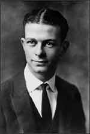

Linus Carl Pauling
1901–1994
Linus Carl Pauling was not only one of the twentieth century's most important scientists but also one of its greatest humanitarians. Born in 1901, Pauling was only nine years old when his father died, leaving him, his mother, and his sisters nearly penniless. The young Pauling worked odd jobs to help support the family. In high school, he refused to take a required civics class because he claimed he'd already learned about civics from his own personal reading. As a result, his high school refused to give him a diploma, but he managed to enter Oregon Agricultural College anyway, on a scholarship, at the age of 16.
Pauling earned his bachelor's degree in chemical engineering and then went to the California Institute of Technology to work on a Ph.D. in chemistry. For his dissertation, he studied molecular structure, becoming one of the first American chemists to use the new X-ray diffraction techniques for determining the distances and angles of the atomic bonds in crystals. Pauling took an unusual, intuitive approach: he would try to visualize possible solutions, based on theoretical knowledge, and then he'd try to find data to support his ideas.
Pauling got his Ph.D., married a former student, and went to Europe to study quantum mechanics. When he returned to Cal Tech as a professor in 1927, he began his study of chemical bonds. He made lots of models, first out of paper and wire, then out of plastic balls and sticks, and finally out of metal and wood. He was the first person to propose that the bonds between atoms are governed by electrons. His book titled The Nature of the Chemical Bond became the most important text on the subject.
By now, Pauling was recognized as an eminent scientist. During World War II, he was asked to join the Manhattan Project, the group responsible for developing the atom bomb. He declined. Instead, he worked on other projects to support the war effort: he tried to find ways to synthesize blood plasma and antibodies; he researched rocket propellants; and he developed a gauge to monitor oxygen levels in submarines. President Truman awarded him a Presidential Medal for Merit for his work.
After the war, Pauling began to speak out about the dangers of radiation from atomic weapons. He proved that atomic weapons testing produces levels of radiation that could cause birth defects, miscarriages, stillbirths, and cancer. He joined Albert Einstein's Emergency Committee of Atomic Scientists and became an outspoken opponent of nuclear weapons testing. Soon, people began to suspect that Pauling might be a communist—although no evidence was ever found to support this. In fact, he had to testify in front of Senate committees twice just to defend himself.
During all this, Pauling continued his own studies. For years he had been trying to determine the structure of proteins. One day in 1948 he came down with a bad head cold and had to stay in bed. For the first few days, he read detective novels. Finally, bored, he started thinking about proteins. He did some sketches on a piece of paper, folded it, and came up with the solution: the alpha-helix. Then he turned his attention to DNA. Because of Pauling’s political views, the U.S. government refused to let him have a passport to go to a conference in Europe in 1952. Had he gone, he probably would have met Rosalind Franklin and seen her photo of the DNA double helix. Instead, he proposed an incorrect model, a triple helix.
In 1954, Pauling was awarded the Nobel prize in chemistry for his work on chemical bonds. The United States finally granted him a passport in November, barely in time for him to fly to Stockholm for the award ceremony.
Pauling became even more vocal about his opposition to nuclear weapons. He got thousands of scientists from around the world to sign a petition calling for an international ban on nuclear testing. In 1958, he published a book entitled No More War! He drafted a resolution for a test ban treaty and presented it to President Kennedy and Soviet Premier Khrushchev. Finally, thanks in part to Pauling's efforts, the world leaders signed a nuclear test ban treaty on October 10, 1963—the same day Pauling received the Nobel prize for peace. To this day, he is the only person to have received two Nobel prizes not shared with anyone else. (After he received the peace prize, his high school finally agreed to give him his high school diploma.)
In the final decades of his life, Pauling became a pop icon for his theories about the role of vitamin C in fighting illness. His 1970 book, Vitamin C and the Common Cold, became a bestseller, although many of his claims about the powers of vitamin C have since been disproved. In 1973, he helped found the Linus Pauling Institute of Science and Medicine, a center for the study of genetics, cancer, aging, neurology, immunology, and vitamin C and other micronutrients. In 1985, he published How to Live Longer and Feel Better, another popular book. Pauling lived to the age of 93.